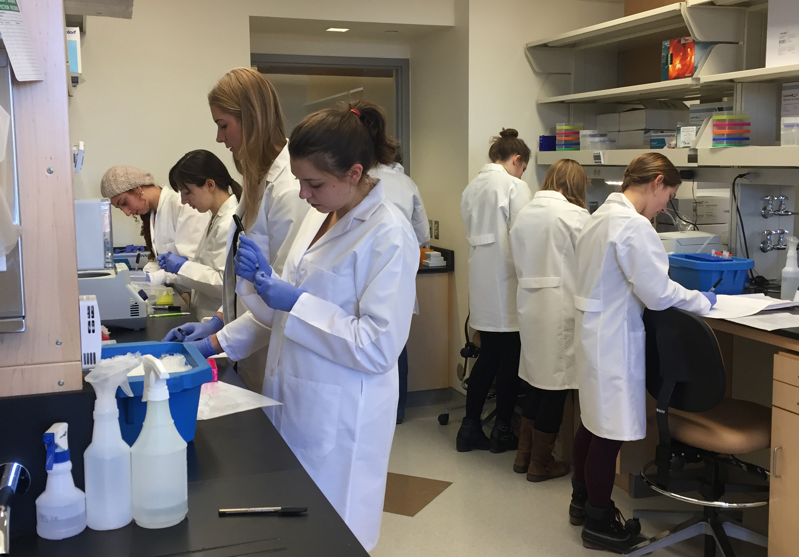

Purpose-built facilities for nutritional and microbial ecology research

The Nutritional & Microbial Ecology Lab has provided independent research opportunities for more than 50 undergraduate students, including future Rhodes Scholars, Herchel Smith Research Fellows, and Thomas Temple Hoopes Prize awardees.
Constructed in 2016, the Nutritional & Microbial Ecology Laboratory provides state-of-the-art facilities and instruments for the analysis of nutritional biochemistry, human/animal/microbial physiology, and microbial ecology. Our 1,627 ft2 ADA-compliant facilities include 8 desks and 1 private office, 10 dedicated bench workstations, 2 chemical hoods, heat-shielded and draft-shielded zones, dedicated darkenable rooms for anaerobic culturing and PCR, a separate cold room (4°C), and shared access to glass wash and autoclave facilities.
Beyond our walls, we benefit from rodent housing and procedure rooms in specific pathogen-free and gnotobiotic facilities, as well as the combined capabilities of multiple Harvard Core resources: